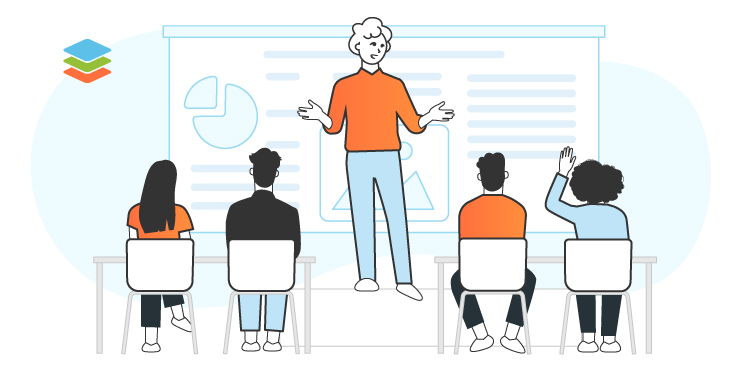
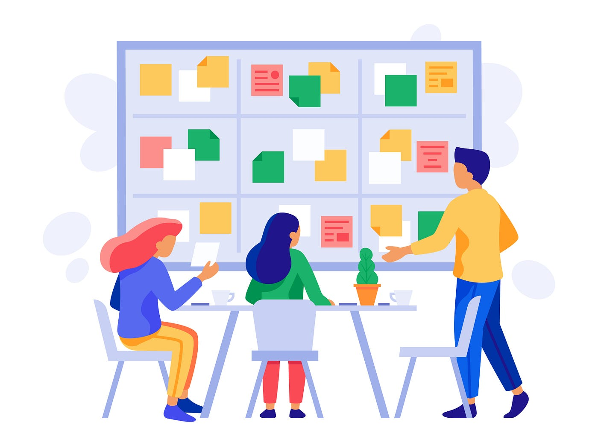
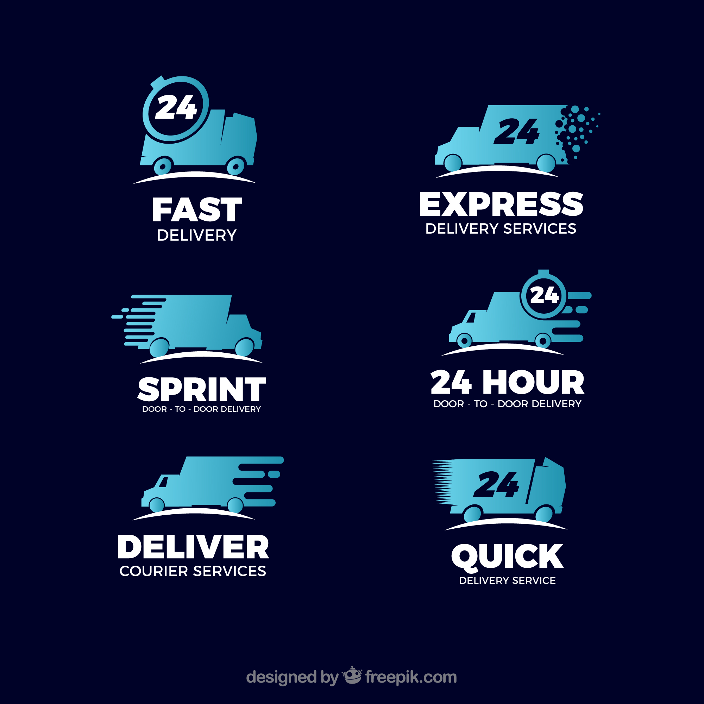

.jpg) GLOW RUSHGLOW RUSH
GLOW RUSHGLOW RUSH
.png) |
.png) |
 |
|---|
Consulta inicial: Una reunión o intercambio con el cliente para comprender la identidad de la marca, sus objetivos, público objetivo y preferencias de estilo. |
|
|---|---|
Investigación: Estudio del sector, la competencia y las tendencias de diseño para garantizar que el logotipo sea relevante y único. |
|
Desarrollo de conceptos: Creación de varias propuestas iniciales de logotipos (generalmente entre 2 y 5 opciones) basadas en la información recopilada. |
|
Presentación y retroalimentación: Entrega de los conceptos al cliente para que los revise y proporcione comentarios o solicite cambios. |

|
Refinamiento: Ajustes al diseño seleccionado, perfeccionando aspectos como colores, tipografía, formas y detalles. |

|
Entrega del logotipo final: Provisión del diseño terminado en múltiples formatos (como PNG, JPG, SVG, EPS) aptos para uso digital e impreso, a menudo con variantes (color, blanco y negro, etc.). |
 |
.jpg)